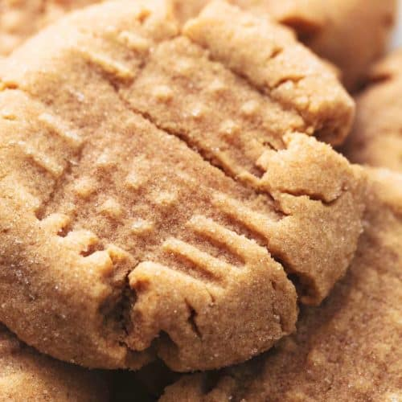

Peanut Butter Cookie Recipe

Description
This is a fantastic recipe for easy, delicious peanut butter cookies!
Ingredients
- 1-1/2 cup flour
- 1/2 cuip butter
- 1 cup peanut butter
- 3/4 cup granulated sugar
- 1 teaspoon vanilla extract
- 1 large eggs
Steps
- Preheat oven to 375 degrees fahrenheit.
- Sift flour and baking powder together then whisk to combine.
- Cream butter and sugars in a stand mixer fitted with a paddle attachment. You can add an optional 1/4-1/2 tsp sea salt.
- Add peanut butter and mix until incorporated.
- Mix in egg and vanilla extract then add flour mixture and beat until incorporated.
- Roll dough into one inch balls and place on baking sheet lined with parchment paper.
- Flatten cookies with a fork in a criss-cross pattern.
- Bake cookies for about 10 minutes.
- Bake cookies for about 10 minutes.
- Allow cookies to cool completely on baking sheet, they need to set up before being transferred.